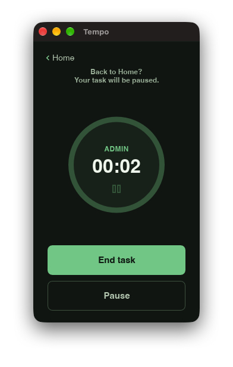
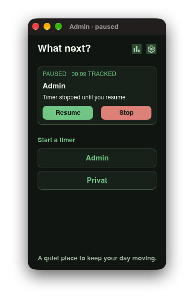
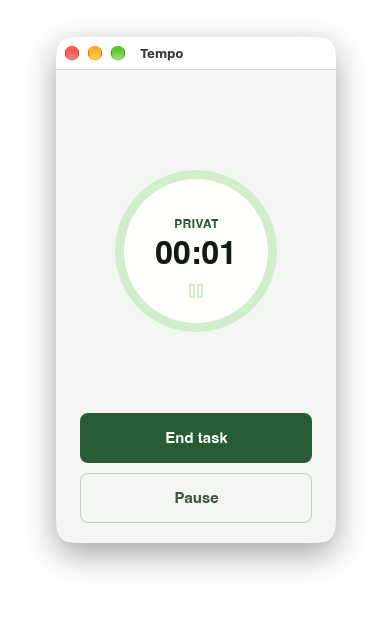
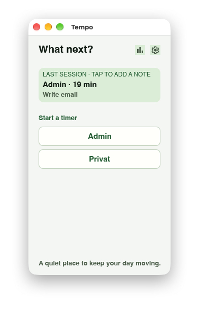
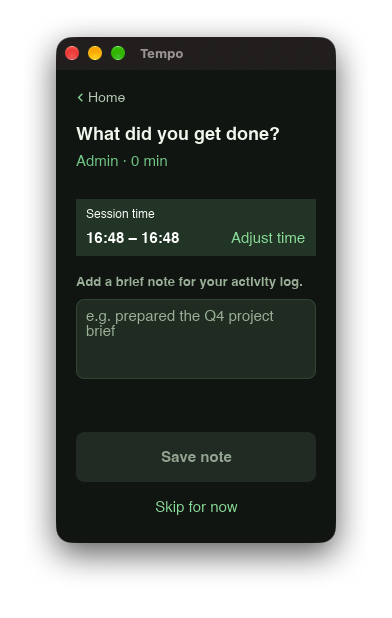
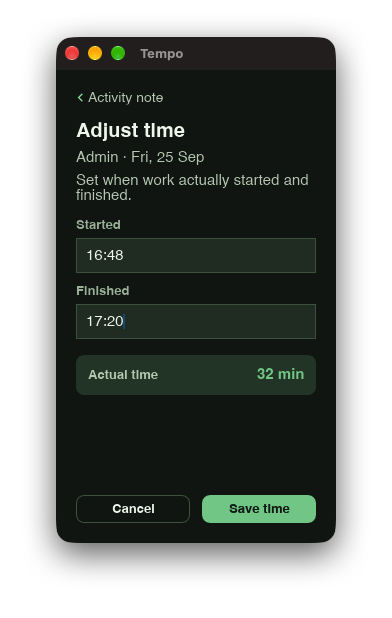
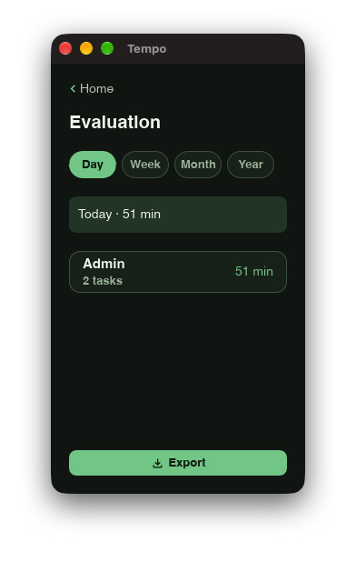
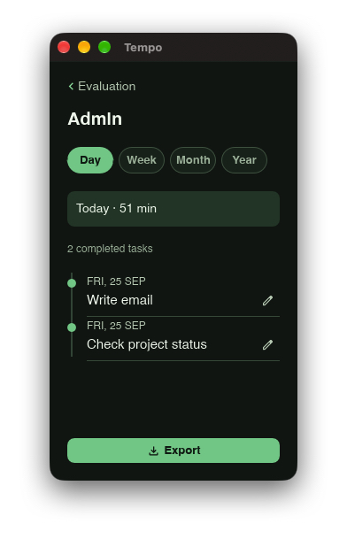
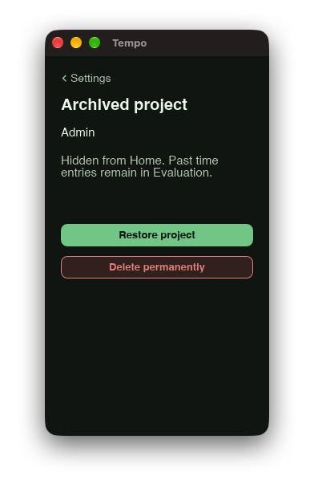
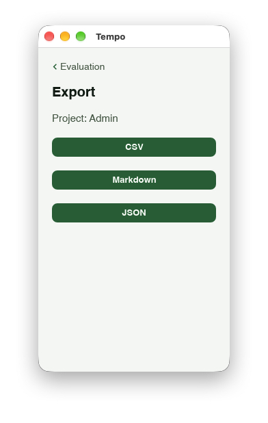

A timer you control
Start, pause, resume and end sessions. Returning to Home pauses the current task, so time away is not counted.
A local desktop app for macOS
Tempo helps you handle interruptions and keep an accurate record of what you did. Track time by project, add context when you are ready, and review your work — with no account required.
⌘ Launching first on macOS

Stay focused through interruptions
Start another project while your original task is paused. Tempo tracks one interruption at a time and returns the original task paused when it ends. Resume it when you are ready.


Start, pause, resume and end sessions. Returning to Home pauses the current task, so time away is not counted.
Add a short activity note after a session, or skip it and add the note later.
Adjust a session’s start and finish times. Edit notes or delete completed entries later.
Create and rename projects. Archive them to clear Home while retaining their recorded work; restore them when needed.
Review totals by project for the day, week, month or year, then inspect the individual sessions.
Use tray shortcuts for timer controls and project switching. Tempo follows your system appearance; its interface and exported reports support English and German.



Review and export
See totals by project and inspect the sessions behind them. Export all projects or one project as CSV, Markdown or JSON.




Your data remains yours
Tempo stores projects, sessions and notes locally in a SQLite database. It works without a cloud service or account.
macOS first
The macOS release is in preparation. The download link will appear here when the App Store listing is live. Windows and Linux releases are planned for later.
First release. Mac App Store link coming after approval.
Planned for a later release.
Planned for a later release.